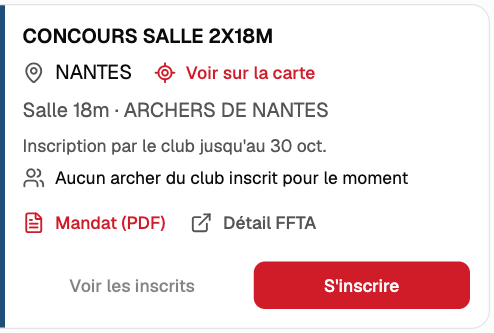
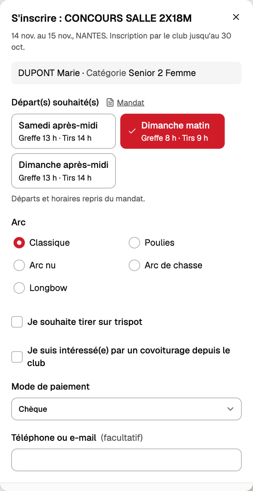

Notice d'utilisation
Consultation des concours FFTA à venir et inscription par l'intermédiaire des Archers de l'Erdre.
1. Recherche d'un concours
- La carte et la liste présentent les concours à venir. Sur téléphone, le bouton situé en bas de l'écran permet de passer de l'une à l'autre.
- Sélectionnez votre département (ou votre région) en haut de la page ; ce choix est conservé. Le bouton Filtres permet d'affiner la recherche par discipline, par dates, etc.
- Le lien Voir sur la carte indique l'emplacement du concours.
2. Inscription
- Sur la fiche du concours, appuyez sur S'inscrire.
- Lors de la première connexion, saisissez votre numéro de licence et votre date de naissance. Aucun mot de passe n'est demandé et la connexion est conservée sur l'appareil.
- Sélectionnez le ou les départs, votre arc et le mode de paiement. Cochez, si nécessaire, le trispot et le covoiturage.
- Validez avec Envoyer mon inscription.
Les inscriptions se font par l'intermédiaire du club, jusqu'à la date indiquée sur la fiche (« Inscription par le club jusqu'au… »), soit environ 15 jours avant le concours.
Lorsque les horaires ne sont pas encore connus, les départs 1 à 4 sont proposés. Une inscription sur un départ inexistant pourra être annulée par le club.


3. Paiement
Une fois l'inscription envoyée, une référence s'affiche (par exemple R-0012). Le règlement est à effectuer auprès du club avant la date indiquée, en espèces, par chèque à l'ordre des Archers de l'Erdre ou par virement, en précisant cette référence.
Le club ne transmet l'inscription à l'organisateur qu'après réception du paiement.
Paiement par virement : indiquez la référence (R-…) dans le libellé du virement.
TitulaireLes Archers de l'Erdre
IBANFR76 1470 6000 3386 7675 9900 007
BICAGRIFRPP847
4. Suivi des inscriptions
Le bouton Mon suivi, en haut de la page, présente l'ensemble de vos inscriptions et leur état :
| Reçue | La demande a bien été reçue par le club. |
| Transmise à l'organisateur | Le club a transmis l'inscription au club organisateur. |
| Validée | L'organisateur a confirmé la place. |
| Plus de place | Le départ était complet. |
| Annulée | Le départ a été annulé. |
Une inscription à l'état « Reçue » peut être retirée avec Retirer ce départ jusqu'à la date limite. Au-delà, adressez-vous au club.
Le lien Voir les inscrits, sur la fiche d'un concours, affiche les archers du club déjà inscrits.
Administration
Ouvrez Administration en haut de la page, puis saisissez votre mot de passe personnel.
Inscriptions
- Les concours comportant des inscrits figurent à gauche ; les archers à droite, une ligne par départ.
- Pour chaque départ, mettez à jour le statut (Reçue → Transmise → Validée…) et cochez Payé à réception du règlement. Tout marquer comme payé s'applique à l'ensemble d'une référence.
- Le bloc Lu dans le mandat rappelle les départs et les tarifs du concours.
- Fichier Excel pour l'organisateur génère la liste à transmettre, montants compris. Sélectionnez « Payés » dans le filtre de paiement pour n'y faire figurer que les départs réglés. Vérifiez les tarifs avant tout envoi : ils sont extraits automatiquement du mandat.
Licenciés
- Importer : déposez le fichier des licenciés exporté de l'extranet FFTA afin de mettre la liste à jour.
- Le bouton « … » en fin de ligne permet de désactiver un licencié ou de le nommer administrateur.
Calendrier FFTA
- Le calendrier est mis à jour automatiquement chaque nuit.
- En cas de concours erroné ou manquant, utilisez Mettre à jour ce concours (quelques secondes).
- « Mettre à jour tout le calendrier » : uniquement en cas de réelle nécessité.